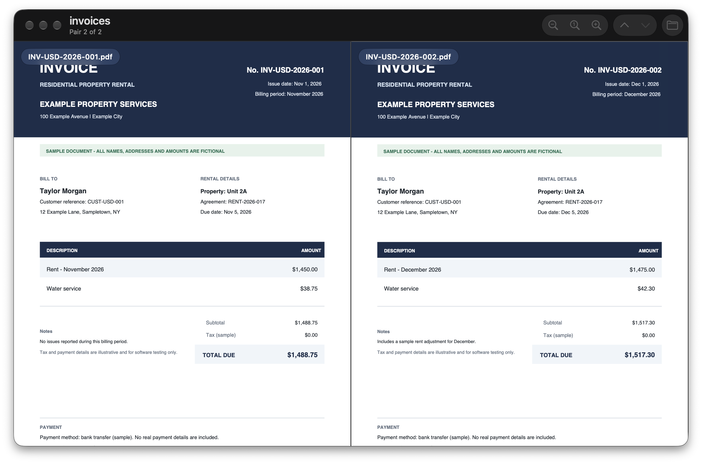

Made for macOS
Two PDFs.
One clear view.
Browse a folder of PDF documents in pairs, side by side. Navigate with your keyboard and review files without switching windows.

Side-by-side viewing
View two PDF files together for straightforward visual comparison.
Keyboard navigation
Use the Up and Down arrow keys to move between document pairs.
Local by design
PDF documents stay on your Mac. No account or upload is required.